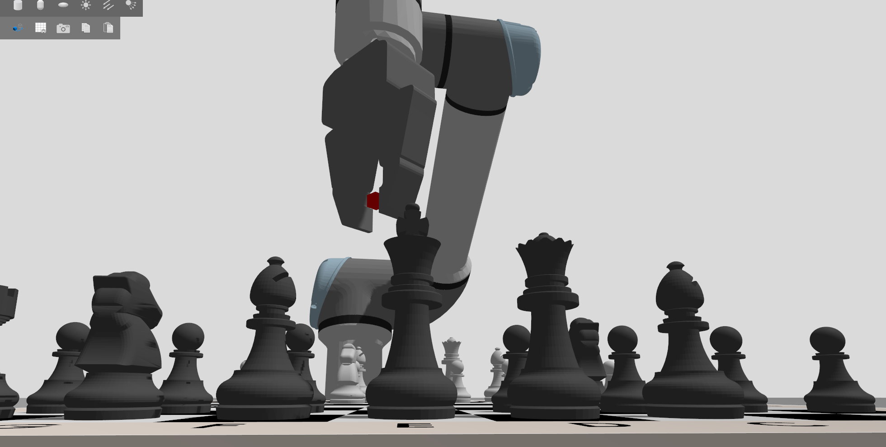
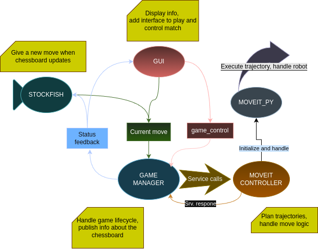

UR5 Chess ROS 2 — Documentation

This documentation covers our university project, which involved converting the original ROS 1 version of UR5 Chess to ROS 2.
During development, we quickly realized that a straightforward migration was not feasible. Due to significant architectural and API changes in ROS 2, much of the original codebase was incompatible. As a result, we opted to rebuild the system from the ground up.
Project Environment
To ensure portability and minimize compatibility issues, we used Docker. This approach allowed us to avoid installing third-party packages and drivers directly into the repository. For convenience, we created scripts to handle building and running the container.
Third-Party Packages
Before diving into our custom packages, we would like to acknowledge DanielBrenn for his contributions. His modifications to the UR driver made it possible to control the RH-P12-RN-A gripper in both Gazebo and MoveIt, and his general support throughout the project was invaluable.
Project Structure

The system is orchestrated by the game manager node. It processes the current board state and robot status, handles incoming messages, and validates moves. Once a move is verified, the game manager delegates execution to the MoveIt controller. It also publishes feedback such as the game state in FEN format or the last move in UCI notation. Most decision-making and external interfaces are centralized here to ensure consistent message flow.
The GUI node handles user interaction and provides feedback through an interactive, clickable chessboard. It supports AI vs AI, PvP, and Player vs AI modes with selectable sides. The GUI manages turn-based control, disabling input when it’s not the player’s turn.
The Stockfish node receives FEN strings and responds with UCI moves. It adapts to the selected game mode—for example, it disables itself in PvP mode and only plays when it’s the AI’s turn in other modes.
The MoveIt controller wraps around moveit_py, which itself is a Python interface to the underlying MoveIt C++ libraries. This node translates UCI move commands into executable trajectories and sends them to the robot. It also handles special cases like castling and piece captures.
For a deeper dive into each ROS 2 node and its internal workings, see the ros2_nodes section.